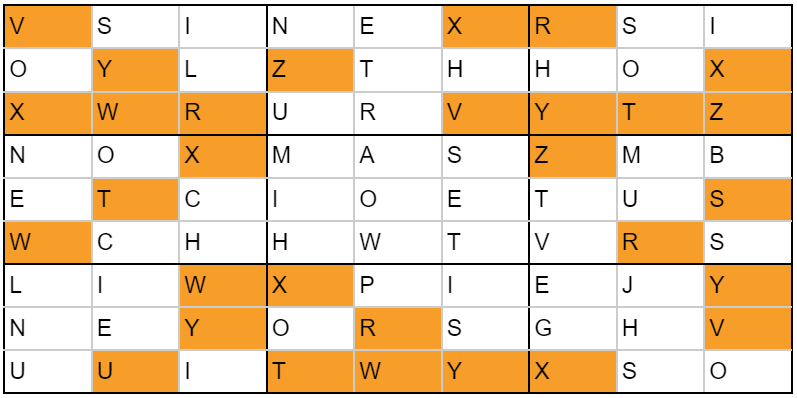
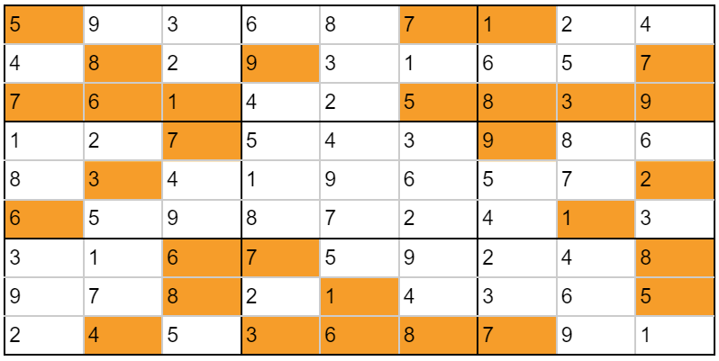

Solution: I Know My Patterns!
Answer: MARIO
Written by Jonathan
This puzzle presents 3x3 squares of black and white cells. The puzzle title is reminiscent of the other puzzle titles “I know my ABCs!” and “I know my 123s!”. The severe lack of information in this puzzle to be remotely useful, the overall meta title being together, and perhaps the fact that some solvers might have found the grid in ABCs to be underutilized, should all clue solvers towards relooking these other 2 puzzles. Indeed, these black and white squares appear in 123s in the drop quotes, and notably there are 8 grids there as well, and we can match the grids up, thanks to the Cardinality team for a very detailed spreadsheet during testsolving!.
The next step is to find them in the giant grid in the ABCs puzzle, and we find that they appear suspiciously in the grid, as follows (Note that no rotations are necessary to match them up, but even without this assumption, given that there are only 7 of each letter in the grid, 4 letters is enough to identify each 3x3 square, even without that, the resulting pattern of their positions should be enough to confirm things):

The letters in the black squares seem to be a limited set, including the rather strange use of Ws and Ys, which should nudge us towards figuring out what letters are used, and we find that 9 total letters are used, RSTUVWXYZ. That, along with the suspicious positions the squares were found, and the 3x3 nature of the squares, should suggest treating the black squares as clues to a letter Sudoku. (Note that the letters in the white squares, while some appear in the same set of letters, clearly cannot be valid givens, because some of them are clearly duplicates within each 3x3)
In the following grid, we convert all Rs to 1s all the way to Zs as 9s, to make the next step more clear, though either way is fine. The sudoku itself does not require any advanced techniques, beyond noticing certain hidden singles, and there are many ways to the solution.

Given that we use consecutive letters of the alphabet, it would make sense to assume they represent an ordering. The only unused letters given are those in the middle grid, and we can rearrange them as given, to get the cluephrase IT’S A ME WHO, and a quick google search will show that this is a catchphrase of the character MARIO.
Author's Notes
Well, this was the Together round prototype that started it all. We tested this trio internally to great success, and we were confident that the Together round set could work.
I think there is something really cool as a solver to open a puzzle and go: “That’s all I get?!” and I hope this puzzle, for a brief moment, had that effect. I really enjoyed the minimalist presentation of this puzzle, and hopefully some solvers out there enjoyed the experience. It was also nice that even with just 9 letters the final cluephrase was not easy to nutrimatic. At least 3 testsolving groups tried, and all 3 failed. I’ll love to hear if anyone skipped the Sudoku and nutrimaticed out the answer without doing it, but I don’t think the Sudoku was too difficult regardless.
I did not want to give the matching directly in the puzzle titles, unfortunately, Slide Away’s presentation was liable to be a giant red herring, and for teams that leave this unlocked till later, we decided it would be safer to just avoid any issues even though we intentionally unlocked Slide Away a couple of puzzles after this one.
It's pretty unfortunate that the cluephrase had to be confirmed in this puzzle, but we anticipate that certain teams might get stuck parsing the cluephrase as IT SAME WHO and be confused for way too long.
Multiple testsolves happened before someone pointed out that the original Italian grid had numbers from 1-10 instead of 1-9, which tragically meant I had to rewrite all 3 puzzles again and change that grid to Zulu instead, apologies for that really long final grid.